ultralytics库使用指南
ultralytics库使用指南
ultralytics就是个类似Paddle Detection的库，里面实现了一堆YOLO系的模型，以及SAM什么的。并搭建好了模型的train, export, predict, val, benchmark等的框架，用户可以直接调用。唯一的区别就是一个是国内的，一个是国外的。
1.全局配置
ultralytics库将==全局配置==（主要是路径之类的）存放在一个YAML文件中，并由SettingsManager这个类对该文件进行I/O操作。该库不只只有这个配置文件。
1.1配置文件的路径
在创建这个类的实例时，需要指定这个配置文件的路径，默认是USER_CONFIG_DIR/settings.yaml，但也可以直接自己指定。USER_CONFIG_DIR是YOLO_CONFIG_DIR这个==环境变量==的值，如果系统没这个环境变量的话，就由get_user_config_dir()这个函数返回。
在windows下返回的地址就是C:\Users\lrq\AppData\Roaming\Ultralytics
1.2全局配置包括啥？
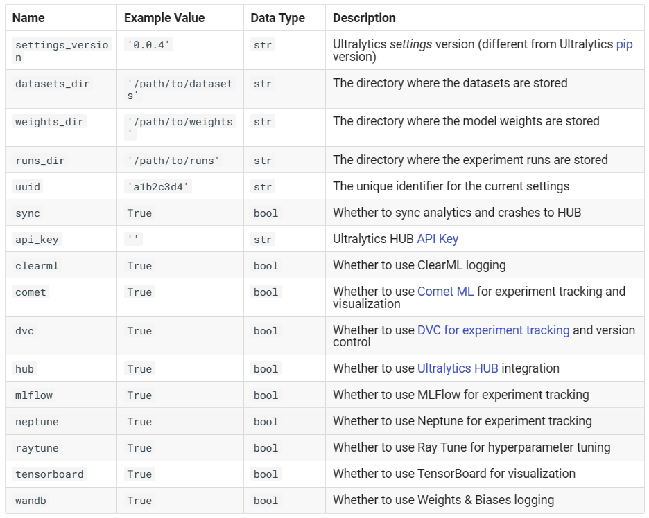1.3全局配置的修改
- 直接打开配置文件修改
- 在代码中使用API修改
2.超参数配置
除了上面那个全局配置文件settings.yaml，还有一个非常重要的配置文件ultralytics\cfg\default.yaml，这个文件主要包括以下几部分：
1 | task: detect # (str) YOLO task, i.e. detect, segment, classify, pose |
可能比较关键的参数有
1 | imgsz # 图像被预处理resize的尺寸，必须是32的倍数。 |
在程序运行时，首先会读取默认的配置文件default.yaml里的内容，然后将会用户自定义的配置文件（也就是cfg字段指向的那个yaml文件）中的内容覆盖掉默认的，再进行后边的任务。
1 | model = YOLO('yolov8n.pt') |
model.train()、model.val()、model.predict()的形参中都可以传入新的参数覆盖掉default.yaml里的内容。
最好针对不同的实验准备不同的超参数配置文件，避免在
default里面改来改去。
3.数据集配置
在该库中，数据集也需要用一个YAML文件描述，需要在该YAML文件中给出路径及类别数和类别名称，并将数据集按YOLO格式放在文件夹之中。
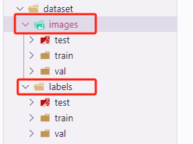
1 | # -------------- dataset\data.yaml -------------- |
dataset的yaml文件中也有
nc这个字段（没的话会根据names长度自动生成），这个字段会覆盖模型结构yaml文件的nc的值，从而影响模型最后一层的结构。
4.如何确定模型网络结构
4.1使用官方提供的模型
该库中所有YOLO系列的模型都是一个类(YOLO)，通过改变实例化该对象时传入的模型结构文件、权重文件，即可创建不同的YOLO模型(v3, v5, v8)
- 模型结构文件指的是
ultralytics/cfg/models/路径下的那些YAML格式的文件 - 权重文件就是
pytroch框架下的权重文件(.pt)
1 | from ultralytics import YOLO |
注意models文件夹里面其实没有yolov8n.yaml，只有yolov8.yaml。当输入yolov8n时，Model类的源码里的一个函数yaml_model_load()会识别出scale = n，然后自动修改模型的结构。
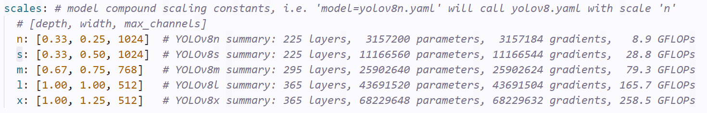
4.1.1模型创建的过程
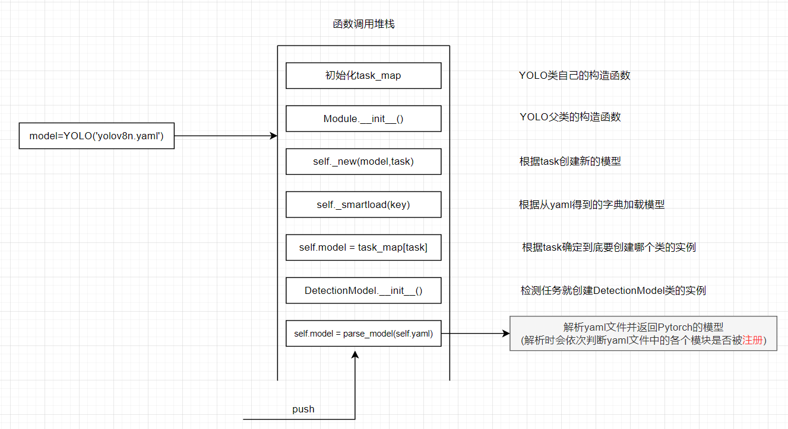
整个模型创建的过程非常繁琐，重要的函数的调用顺序如上图所示。
4.2.2配置文件的写法
随便找一个配置文件：
一、模型尺度部分
1 | nc: 80 # number of classes |
- depth：模型的深度，该系数会乘以下面的
repeats参数，作为各模块的重复次数 - width：卷积层的厚度，该系数会乘以各个卷积相关模块给定的输出特征图的通道数，作为真正的特征图通道数
- max_channels：计算过程中特征图的最大通道数
二、BackBone部分
1 | # YOLOv8.0n backbone |
yolo会按照配置文件实例化各个层，每行的list中的四个元素：[from, repeats, module, args]
- from：该层的输入特征图的通道数（为-1时则为上一层的输出）
- repeats：该层模块的重复次数
- module：所使用模块的类名
- args：类的初始化参数（注意：实际传入module的构造函数的参数与这里的args可能有区别）
以backbone的第一层为例：
1 | class Conv(nn.Module): |
在parse_model()中会重新组织实例化Conv类时传入的形参
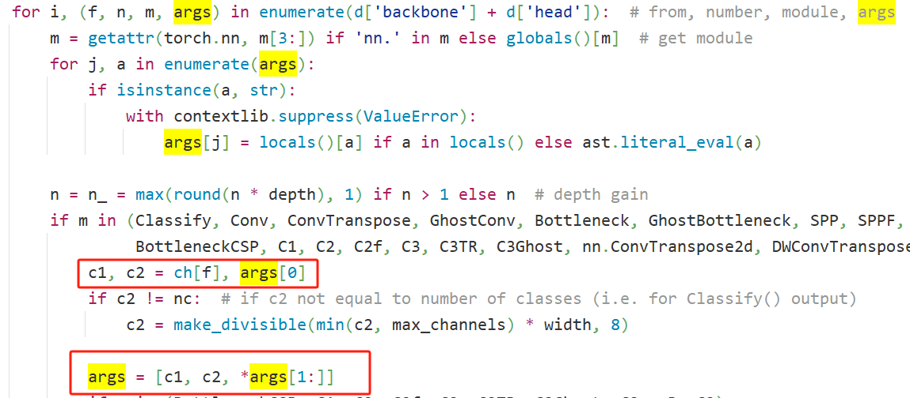
也就是说：backbone第一层的
yaml中的参数args=[64, 3, 2]，**==实际==传入卷积层的却是[ch[-1], 64width, 3, 2]* = [3, 16, 3, 2]。第二层的yaml为args= [128, 3, 2]，实际传入卷积层的为[16, 32, 3, 2]…
直接看终端的LOG其实就知道了
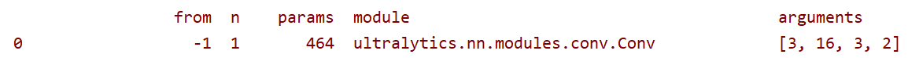
三、Head部分
我个人觉得YOLOv8的
yaml中把模型的neck和head部分全部写到一起了…
1 | # YOLOv8.0n head |
（1）看一下neck的Concat模块，在源码中
1 | for i, (f, n, m, args) in enumerate(d['backbone'] + d['head']): # from, number, module,args |
即Concat模块会把from列表中给定的层给拼接起来。
（2）看一下head的输出端
YOLOv8到底用来做什么任务需要在
yaml的head的最后一层来指定
1 | elif m in (Detect, Segment, Pose): |
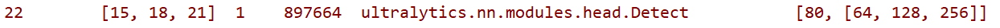
当使用detect头时，from列表的输入表示：检测头要使用的特征图来自网络的第几层。
4.2使用自己缝合的模型
主要包含以下几个步骤：
(1)打开ultralytics/nn/modules/文件夹下某个.py，在该文件中写好要缝合的模块的类(继承nn.Module)
(2)在ultralytics/nn/tasks.py文件中import要缝合的模块
(3)如果是要替换原来的模块，则在parse_model()这个函数中看看待替换模块在哪里被解析的，按同样的方式添加新模块
(4)在ultralytics/cfg/models文件夹下创建新的模型对应的.yaml文件
5.模型推理流程
pythonAPI中模型推理接口的使用方法：
1 | model = YOLO('yolov8n.pt') |
这些API具体用法参考官方文档：https://docs.ultralytics.com/modes/predict/，这里就不展开了。
下面主要分析代码执行流程：
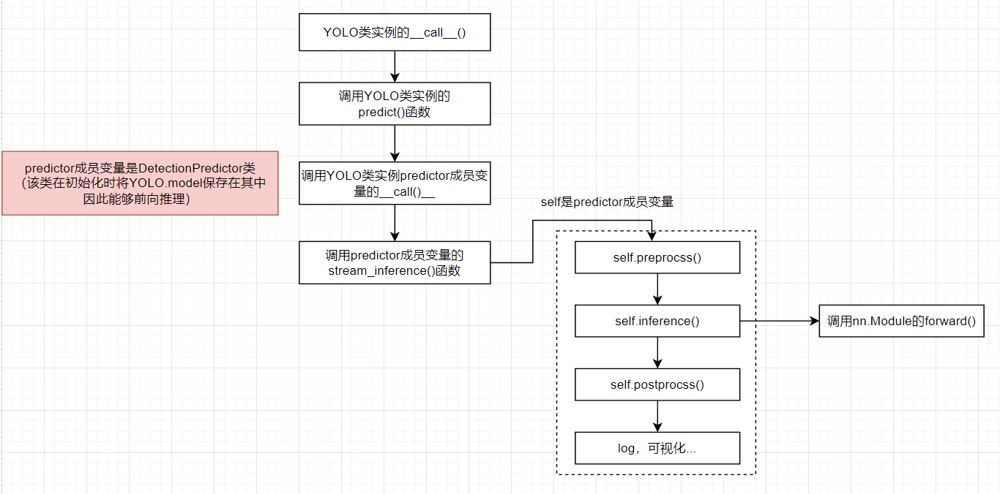
6.模型训练流程
6.2恢复训练
1 | model = YOLO('/home/aistudio/work/ultralytics/runs/detect/train5/weights/last.pt') |
恢复训练时，必须在实例化模型时传入权重文件的路径，不然重启训练时可能不能接着上一次的epoch继续
注意：
- 如果要
resume训练，那么任何超参数比如上面的save_period之类的都是无法修改的 - 根据传入权重文件的路径的不同，重新开始的
epoch也不同 - 如果某工程已经训练完了，那么在
resume将从零开始
7.数据集(数据增强)源码解读
ultrlytics中的数据集/数据增强部分也是非常复杂
7.1训练所用的Dataset类
数据集类的继承拓扑关系如下：
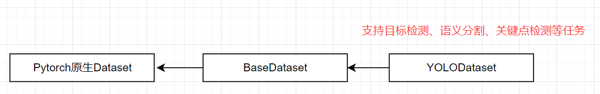
在BaseDataset类中，有以下属性
其中比较重要的就是以上红框框出来的属性，在ultrlytics的代码框架中，数据集的transforms都是通过build_transform()这个API来获得的，基类中并没有实现该函数，需要子类（YOLODataset）进行重写。
7.2训练时的数据增强
ultralytics的数据增强分为多个步骤，下面是其执行的大致流程：
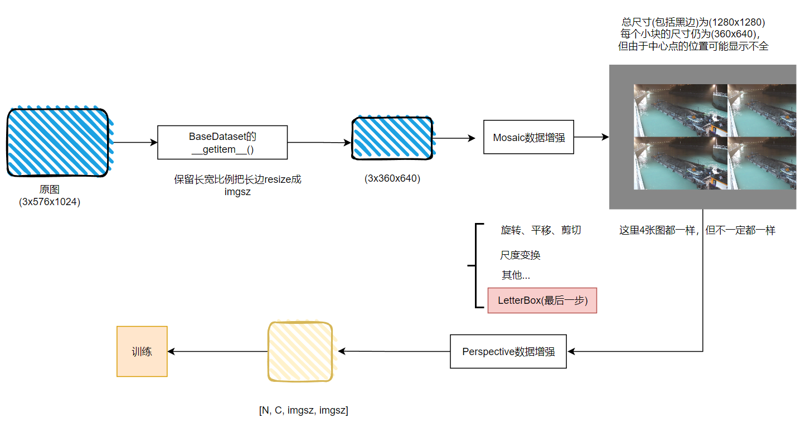
7.3预测时的数据增强
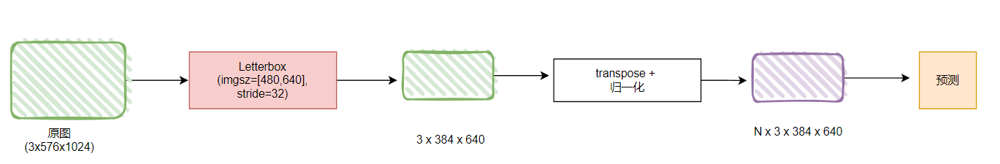
8.自动选择optimizer机制
ultrlytics库如果把配置文件中的optimizer设置为auto，则它会自动帮你选择学习率和优化器，相关源码如下：
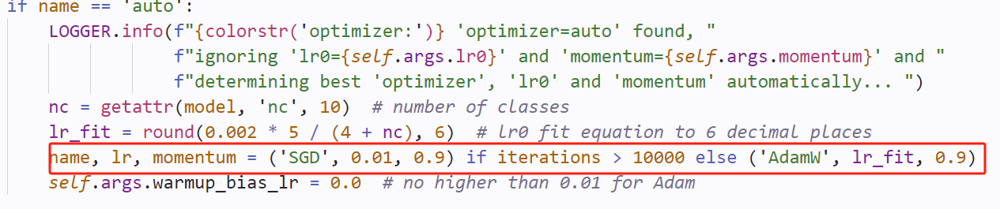
可见自动帮你选的时候，会根据总的iterations选择SGD或AdamW。如果总的迭代次数较多，则选择SGD，反之选择AdamW。因为SGD收敛较慢，但其最终效果却比AdamW好。因此自己训练论文中的模型时，尽量设置较大的epoch并使用SGD，这样便于得到更好的结果。